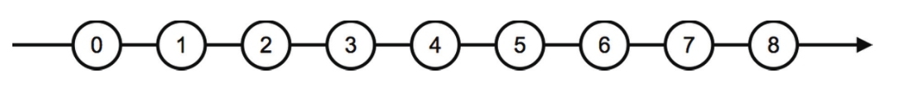
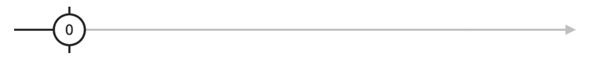
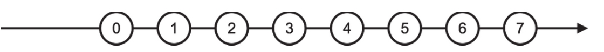

到目前为止介绍的创建类操作符产生的数据流都是同步产生数据，无论是简单列举数据的of，还是可以产生复杂组合的range，最后产生的Observable对象都是一口气把数据传给下游，每个数据之间没有时间间隔，不过，就像官方网站宣传的那样，RxJS的最大的卖点是擅长处理异步操作，也就是擅长处理在一个时间段上间歇性产生数据的数据流，接下来，我们就介绍两种最简单的产生异步数据流的操作符：interval和timer。
在JavaScript中要模拟异步的处理，惯常的做法就是用JavaScript自带的两个函数setInterval和setTimeout，通过指定时间，让一些指令在一段时间之后再执行。可以说，在RxJS中，interval和timer这两个操作符的地位就等同于原生JavaScript中的setInterval和setTimeout。注意，只是说地位等同，功能上并不完全一样，我们接下来就会看到区别。
interval接受一个数值类型的参数，代表产生数据的间隔毫秒数，返回的Observable对象就按照这个时间间隔输出递增的整数序列，从0开始。比如，interval的参数是1000，那么，产生的Observable对象在被订阅之后，在1秒钟的时刻吐出数据0，在2秒钟的时刻吐出数据1，在3秒钟的时刻吐出数据2……对应的实例代码如下：
import 'rxjs/add/observable/interval'; const source$ = Observable.interval(1000);
上面代码产生的数据流的弹珠图如图4-9所示，注意到这个弹珠图中没有完结符号，表示这个数据流不会完结，因为interval不会主动调用下游的complete，要想停止这个数据序列，就必须要做退订的动作。

图4-9 interval产生的数据流
读者可能会有问题，interval产生的异步数据序列总是从0开始递增，但是实际中的需求未必局限于此，比如需要从1开始递增的异步数据序列，那该怎么办？
在RxJS中，每个操作符都尽量功能精简，所以interval并没有参数用来定制数据序列的起始值，要解决复杂问题，应该用多个操作符的组合，而不是让一个操作符的功能无限膨胀。
解决上面问题对应的代码如下：
const source$ = Observable.interval(1000); const result$ = source$.map(x => x + 1);
在上面的代码中，借助interval和map的组合，最终result$产生的就是从1开始的递增异步数据序列。
从上面的描述可以看到，interval就是RxJS世界中的setInterval，区别只是setInterval定时调用一个函数，而interval返回的Observable对象定时产生一个数据。
除了有对应于setInterval的interval，RxJS还有对应于setTimeout的名为timer的操作符。timer的第一个参数可以是一个数值，也可以是一个Date类型的对象。如果第一个参数是数值，代表毫秒数，产生的Observable对象在指定毫秒之后会吐出一个数据0，然后立刻完结。
下面是使用timer的示例代码：
import 'rxjs/add/observable/timer'; const source$ = Observable.timer(1000);
产生的Observable对象弹珠图如图4-10所示。

图4-10 一个参数的timer的弹珠图
上面的功能也可以通过传递一个Date对象给timer来实现，代码如下：
const now = new Date(); const later = new Date(now.getTime() + 1000); const source$ = Observable.timer(later);
使用数值参数还是使用Date对象作为参数，应该根据具体情况确定，如果明确延时产生数据的时间间隔，那就应该用数值作为参数，如果明确的是一个时间点，那用Date对象毫无疑问是最佳选择。
timer还支持第二个参数，如果使用第二个参数，那就会产生一个持续吐出数据的Observable对象，类似interval的数据流。第二个参数指定的是各数据之间的时间间隔，从被订阅到产生第一个数据0的时间间隔，依然由第一个参数决定。
在下面的示例代码中，source$被订阅之后，2秒钟的时刻吐出0，然后3秒钟的时刻吐出1，4秒钟的时刻吐出2……依次类推：
const source$ = Observable.timer(2000, 1000);
对应的弹珠图如图4-11所示。

图4-11 两个参数的timer的弹珠图
timer支持产生持续的数据序列，这和setTimeout就很不一样了，setTimeout只能支持一次异步操作，从这个角度看，timer的功能是setTimeout的超集。
如果timer的第一个参数和第二个参数一样，那就和interval的功能完全一样了，下面两个数据流source1$和source2$产生的结果完全一样：
const source1$ = Observable.interval(1000); const source2$ = Observable.timer(1000, 1000);
可以认为interval是间隔时间参数相同时timer的一种简写的方法，在本书的其他示例代码中，可以看到大量使用interval和timer。